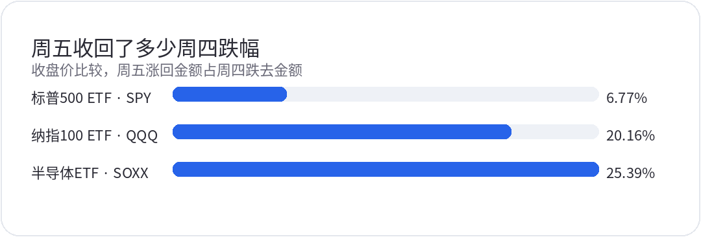
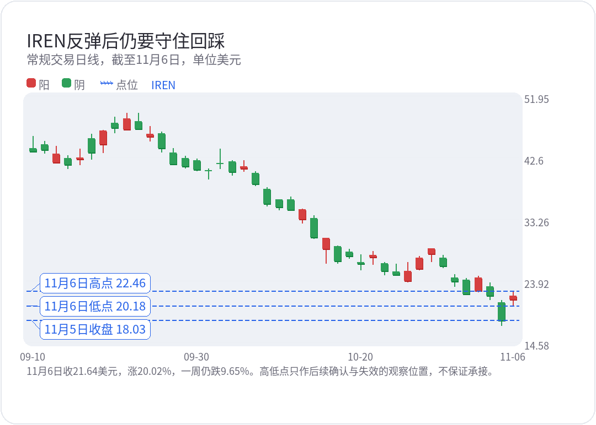
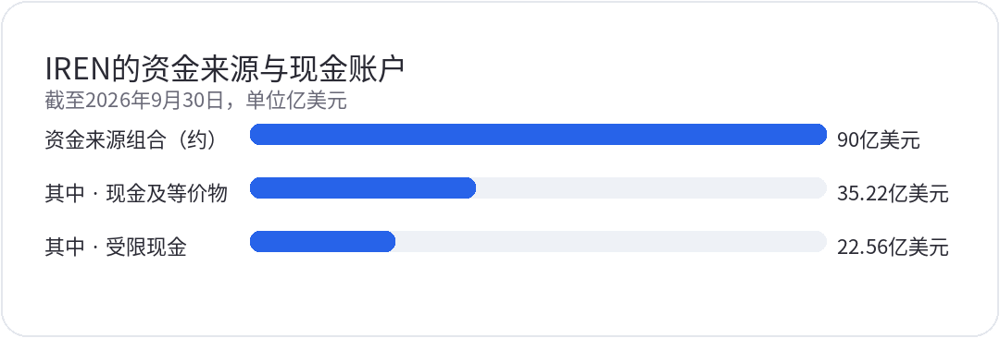

<div style="margin:0;padding:0;background:#f5f7fa;color:#2a2a34;font-size:16px;line-height:1.9;font-family:-apple-system,BlinkMacSystemFont,'SF Pro Text','PingFang SC','Hiragino Sans GB','Microsoft YaHei',Arial,sans-serif;font-variant-numeric:tabular-nums;font-feature-settings:'tnum' 1,'lnum' 1;text-align:left !important;text-align-last:left;letter-spacing:0;word-spacing:normal;white-space:normal;word-break:normal;box-sizing:border-box;"><div style="margin:0;background:#ffffff;padding:28px 22px 44px 22px;box-sizing:border-box;text-align:left !important;text-align-last:left;letter-spacing:0;word-spacing:normal;white-space:normal;word-break:normal;"><p style="display:block;width:100%;margin:0 0 12px 0;padding:0;color:#2763e9;font-size:10px;line-height:1.6;font-weight:650;letter-spacing:0.12em;text-align:center !important;text-align-last:center;word-spacing:normal;white-space:normal;word-break:normal;box-sizing:border-box;">美股 · 期权 · 资讯 · 观点</p><div style="margin:0 0 30px 0;padding:0;text-align:center !important;text-align-last:center;word-spacing:normal;white-space:normal;word-break:normal;box-sizing:border-box;"></div><div style="margin:0 0 0 0;padding:28px 0 0 0;text-align:left !important;text-align-last:left;letter-spacing:0;word-spacing:normal;white-space:normal;word-break:normal;box-sizing:border-box;"><div style="margin:0 0 12px 0;padding:0;text-align:left !important;line-height:1.2;border:0;display:flex;align-items:center;gap:10px;text-align-last:left;letter-spacing:0;word-spacing:normal;white-space:normal;word-break:normal;box-sizing:border-box;"><span style="display:inline-block;flex:0 0 auto;vertical-align:middle;color:#2763e9;font-size:12px;font-weight:850;letter-spacing:0.12em;line-height:1.2;text-transform:uppercase;border:0;box-sizing:border-box;">0 · SEMIS</span><span style="display:block;flex:1 1 auto;min-width:36px;vertical-align:middle;height:1px;margin:0 0 2px 0;background:#2763e9;line-height:1px;font-size:0;border:0;box-sizing:border-box;"></span></div><p style="margin:0 0 16px 0;padding:0;color:#2a2a34;font-size:22px;line-height:1.45;font-weight:850;text-align:left !important;letter-spacing:0;text-align-last:left;word-spacing:normal;white-space:normal;word-break:normal;box-sizing:border-box;">芯片先弹，等权标普还在跌</p><p style="margin:0 0 16px 0;padding:0;color:#454550;font-size:16px;line-height:1.9;font-weight:400;text-align:left !important;letter-spacing:0;word-spacing:normal;white-space:normal;word-break:normal;text-align-last:left;box-sizing:border-box;">美东11月6日周五，标普和纳指反弹，参与面却没有一起修复。跟踪市值加权标普500的<strong style="color:#2a2a34;font-weight:700;box-sizing:border-box;">SPY</strong>涨0.31%，同一批股票换成等权组合，<strong style="color:#2a2a34;font-weight:700;box-sizing:border-box;">RSP</strong>跌了0.38%。代表标普11个板块的ETF中，8只收跌，科技领涨。不过，小盘ETF <strong style="color:#2a2a34;font-weight:700;box-sizing:border-box;">IWM</strong>也涨了0.99%，小盘也有修复，只是各个方向没有同步。</p><p style="margin:0 0 16px 0;padding:0;color:#454550;font-size:16px;line-height:1.9;font-weight:400;text-align:left !important;letter-spacing:0;word-spacing:normal;white-space:normal;word-break:normal;text-align-last:left;box-sizing:border-box;"><strong style="color:#2a2a34;font-weight:700;box-sizing:border-box;">QQQ</strong>收656.10美元，涨1.40%；半导体ETF <strong style="color:#2a2a34;font-weight:700;box-sizing:border-box;">SOXX</strong>收136.53美元，涨3.51%。涨得不少，离收复周四失地还远。按同一只ETF跌去和涨回的美元金额比较，QQQ周五只收回约两成，SOXX约四分之一，SPY不到一成。</p><p style="margin:4px 0 6px 0;padding:0;text-align:center !important;text-align-last:center;word-spacing:normal;white-space:normal;word-break:normal;box-sizing:border-box;"></p><p style="margin:0 0 16px 0;padding:0;color:#9a9aa8;font-size:12px;line-height:1.6;text-align:center !important;text-align-last:center;word-spacing:normal;white-space:normal;word-break:normal;box-sizing:border-box;">分母是11月4日至5日跌去的美元金额，分子是11月5日至6日涨回的美元金额；不是周五涨幅。SOXX统一为一拆三后价格。</p><p style="margin:0 0 16px 0;padding:0;color:#454550;font-size:16px;line-height:1.9;font-weight:400;text-align:left !important;letter-spacing:0;word-spacing:normal;white-space:normal;word-break:normal;text-align-last:left;box-sizing:border-box;">量能比周四缓了下来。SPY和QQQ成交量低于周四急跌时，但仍高于各自此前20日均量，谈不上“没有量”。恐慌指数<strong style="color:#2a2a34;font-weight:700;box-sizing:border-box;">VIX</strong>由28.18回落到25.64，仍高于11月4日的16.61，标普期权隐含波动率还没回到急跌前。</p><p style="margin:0 0 16px 0;padding:0;color:#454550;font-size:16px;line-height:1.9;font-weight:400;text-align:left !important;letter-spacing:0;word-spacing:normal;white-space:normal;word-break:normal;text-align-last:left;box-sizing:border-box;">SOXX周五盘中冲到140.21美元，收盘回到136.53美元，高位没能守住。接下来先看当日低点133.80美元附近能否守住回踩，再看越过140.21美元后能否站稳；还在这个区间里，就先等确认。</p><p style="margin:0 0 16px 0;padding:0;color:#454550;font-size:16px;line-height:1.9;font-weight:400;text-align:left !important;letter-spacing:0;word-spacing:normal;white-space:normal;word-break:normal;text-align-last:left;box-sizing:border-box;">QQQ盘中最高664.52美元，收656.10美元，也留下了一段回落。若站上664.52美元、回踩又能守住，反弹才多一层确认；跌回周五低点653.99美元以下，就要调低对反弹延续的期待。这些高低点只是观察位置，不能当成保证反转的支撑和目标。</p></div><div style="margin:30px 0 0 0;padding:28px 0 0 0;text-align:left !important;text-align-last:left;letter-spacing:0;word-spacing:normal;white-space:normal;word-break:normal;box-sizing:border-box;"><div style="margin:0 0 12px 0;padding:0;text-align:left !important;line-height:1.2;border:0;display:flex;align-items:center;gap:10px;text-align-last:left;letter-spacing:0;word-spacing:normal;white-space:normal;word-break:normal;box-sizing:border-box;"><span style="display:inline-block;flex:0 0 auto;vertical-align:middle;color:#2763e9;font-size:12px;font-weight:850;letter-spacing:0.12em;line-height:1.2;text-transform:uppercase;border:0;box-sizing:border-box;">1 · LIQUIDITY</span><span style="display:block;flex:1 1 auto;min-width:36px;vertical-align:middle;height:1px;margin:0 0 2px 0;background:#2763e9;line-height:1px;font-size:0;border:0;box-sizing:border-box;"></span></div><p style="margin:0 0 16px 0;padding:0;color:#2a2a34;font-size:22px;line-height:1.45;font-weight:850;text-align:left !important;letter-spacing:0;text-align-last:left;word-spacing:normal;white-space:normal;word-break:normal;box-sizing:border-box;">非农没有给资金成本松绑</p><p style="margin:0 0 16px 0;padding:0;color:#454550;font-size:16px;line-height:1.9;font-weight:400;text-align:left !important;letter-spacing:0;word-spacing:normal;white-space:normal;word-break:normal;text-align-last:left;box-sizing:border-box;">美国10月非农新增16.5万人，前两个月合计上修8.4万人；失业率4.1%，平均时薪环比增长0.4%、同比增长3.1%。就业骤然衰退、政策马上转松，都还不能拿来当交易前提。因经济原因从事兼职的人数也在增加，单月报告同样不支持“劳动力市场毫无压力”的判断。</p><p style="margin:0 0 16px 0;padding:0;color:#454550;font-size:16px;line-height:1.9;font-weight:400;text-align:left !important;letter-spacing:0;word-spacing:normal;white-space:normal;word-break:normal;text-align-last:left;box-sizing:border-box;">美债收益率没有替反弹减轻负担。官方日度数据中，两年期从周四的4.46%升至4.51%，十年期从4.84%升至4.86%。这套曲线采用美东约下午3点半的指示性报价，与股票收盘并非同一时刻。短端利率仍在上行，长期建设项目没有等来明显便宜的资金。对先投入、后交付的AI算力公司，收入兑现和融资条件还得逐项看，股价反弹不足以让资金风险要求跟着放松。</p></div><div style="margin:30px 0 0 0;padding:28px 0 0 0;text-align:left !important;text-align-last:left;letter-spacing:0;word-spacing:normal;white-space:normal;word-break:normal;box-sizing:border-box;"><div style="margin:0 0 12px 0;padding:0;text-align:left !important;line-height:1.2;border:0;display:flex;align-items:center;gap:10px;text-align-last:left;letter-spacing:0;word-spacing:normal;white-space:normal;word-break:normal;box-sizing:border-box;"><span style="display:inline-block;flex:0 0 auto;vertical-align:middle;color:#2763e9;font-size:12px;font-weight:850;letter-spacing:0.12em;line-height:1.2;text-transform:uppercase;border:0;box-sizing:border-box;">2 · FOCUS</span><span style="display:block;flex:1 1 auto;min-width:36px;vertical-align:middle;height:1px;margin:0 0 2px 0;background:#2763e9;line-height:1px;font-size:0;border:0;box-sizing:border-box;"></span></div><p style="margin:0 0 16px 0;padding:0;color:#2a2a34;font-size:22px;line-height:1.45;font-weight:850;text-align:left !important;letter-spacing:0;text-align-last:left;word-spacing:normal;white-space:normal;word-break:normal;box-sizing:border-box;">IREN收入跑得快，建设付款跑得更快</p><p style="margin:0 0 16px 0;padding:0;color:#454550;font-size:16px;line-height:1.9;font-weight:400;text-align:left !important;letter-spacing:0;word-spacing:normal;white-space:normal;word-break:normal;text-align-last:left;box-sizing:border-box;">AI云算力运营商<strong style="color:#2a2a34;font-weight:700;box-sizing:border-box;">IREN</strong>收21.64美元，涨20.02%，几乎收回周四跌去的美元金额，一周却仍跌9.65%。后面先看周五低点20.18美元附近的承接，再看能否有效突破当日高点22.46美元。回踩守不住，20%的涨幅也不能代替入场条件；价格站稳之后，还要看到交付与资金进度兑现，才能提高对这轮反弹的信心。</p><p style="margin:0 0 16px 0;padding:0;color:#454550;font-size:16px;line-height:1.9;font-weight:400;text-align:left !important;letter-spacing:0;word-spacing:normal;white-space:normal;word-break:normal;text-align-last:left;box-sizing:border-box;">财报里的业务增长确实很快。截至9月30日的2027财年第一季度，总营收2.28亿美元，AI云收入2亿美元，环比增长182%。其中6500万美元是租赁收入，上季度没有这一项，全部增幅不能都算成同口径服务收入增长。</p><p style="margin:0 0 16px 0;padding:0;color:#454550;font-size:16px;line-height:1.9;font-weight:400;text-align:left !important;letter-spacing:0;word-spacing:normal;white-space:normal;word-break:normal;text-align-last:left;box-sizing:border-box;">现金还没跟上扩张。当季GAAP净亏损2.63亿美元，经营现金流5.29亿美元，其中递延收入相关营运资金变动贡献了6.45亿美元。这个变动不能全算成新收到的预付款，经营现金流也不等于当季经营利润。同期设备和基建两项现金付款合计48.24亿美元，远高于经营现金流，建设仍要靠外部资金衔接。</p><p style="margin:4px 0 6px 0;padding:0;text-align:center !important;text-align-last:center;word-spacing:normal;white-space:normal;word-break:normal;box-sizing:border-box;"></p><p style="margin:0 0 16px 0;padding:0;color:#9a9aa8;font-size:12px;line-height:1.6;text-align:center !important;text-align-last:center;word-spacing:normal;white-space:normal;word-break:normal;box-sizing:border-box;">11月6日收21.64美元，涨20.02%，一周仍跌9.65%。高低点只作后续确认与失效的观察位置，不保证承接。</p></div><div style="margin:30px 0 0 0;padding:28px 0 0 0;text-align:left !important;text-align-last:left;letter-spacing:0;word-spacing:normal;white-space:normal;word-break:normal;box-sizing:border-box;"><div style="margin:0 0 12px 0;padding:0;text-align:left !important;line-height:1.2;border:0;display:flex;align-items:center;gap:10px;text-align-last:left;letter-spacing:0;word-spacing:normal;white-space:normal;word-break:normal;box-sizing:border-box;"><span style="display:inline-block;flex:0 0 auto;vertical-align:middle;color:#2763e9;font-size:12px;font-weight:850;letter-spacing:0.12em;line-height:1.2;text-transform:uppercase;border:0;box-sizing:border-box;">3 · FOCUS</span><span style="display:block;flex:1 1 auto;min-width:36px;vertical-align:middle;height:1px;margin:0 0 2px 0;background:#2763e9;line-height:1px;font-size:0;border:0;box-sizing:border-box;"></span></div><p style="margin:0 0 16px 0;padding:0;color:#2a2a34;font-size:22px;line-height:1.45;font-weight:850;text-align:left !important;letter-spacing:0;text-align-last:left;word-spacing:normal;white-space:normal;word-break:normal;box-sizing:border-box;">90亿美元里，有些钱还不能动用</p><p style="margin:0 0 16px 0;padding:0;color:#454550;font-size:16px;line-height:1.9;font-weight:400;text-align:left !important;letter-spacing:0;word-spacing:normal;white-space:normal;word-break:normal;text-align-last:left;box-sizing:border-box;">90亿美元是IREN截至9月底一组资金来源的合计，里面有现金及等价物、受限现金、尚未提取的已承诺GPU融资，还有已签约但尚未收到的客户预付款。其中现金及等价物35.22亿美元，受限现金22.56亿美元。银行账户里能随时动用的钱，不能按90亿美元算；受限资金释放、融资提款和客户付款各有时间表。</p><p style="margin:4px 0 6px 0;padding:0;text-align:center !important;text-align-last:center;word-spacing:normal;white-space:normal;word-break:normal;box-sizing:border-box;"></p><p style="margin:0 0 16px 0;padding:0;color:#9a9aa8;font-size:12px;line-height:1.6;text-align:center !important;text-align-last:center;word-spacing:normal;white-space:normal;word-break:normal;box-sizing:border-box;">后两项已包含在资金组合内，并非额外资金。组合还包括未提取融资和未收到的合同预付款，附提款及资金释放条件。</p><p style="margin:0 0 16px 0;padding:0;color:#454550;font-size:16px;line-height:1.9;font-weight:400;text-align:left !important;letter-spacing:0;word-spacing:normal;white-space:normal;word-break:normal;text-align-last:left;box-sizing:border-box;">公司表示，支持40亿美元以上年化收入运行率目标的0.3GW项目已安排资金，但仍受融资提款、托管资金释放条件和可使用期限约束。自9月底起的2027财年剩余资本开支计划约150亿美元，进一步扩张另有约60亿美元融资目标，取决于市场条件。60亿美元对应后续扩张，不能简单相减，就写成当前40亿美元运行率项目突然出现的资金缺口。</p><p style="margin:0 0 16px 0;padding:0;color:#454550;font-size:16px;line-height:1.9;font-weight:400;text-align:left !important;letter-spacing:0;word-spacing:normal;white-space:normal;word-break:normal;text-align-last:left;box-sizing:border-box;">运行率目标也有延期。公司把40亿美元以上目标从2026年底推到2027年1月，可能延至2月底。目标按投运GPU及合同定价等折算年化收入，不是已经确认的GAAP收入；设备投运、测试和客户验收后，实际收入还可能用几个月爬坡。接下来要跟的是验收、预付款到账和融资实际提款。建设付款继续在前，交付和收款却往后推，资金组合再大，期间的现金压力也不会自动消失。</p></div><div style="margin:30px 0 0 0;padding:28px 0 0 0;text-align:left !important;text-align-last:left;letter-spacing:0;word-spacing:normal;white-space:normal;word-break:normal;box-sizing:border-box;"><div style="margin:0 0 12px 0;padding:0;text-align:left !important;line-height:1.2;border:0;display:flex;align-items:center;gap:10px;text-align-last:left;letter-spacing:0;word-spacing:normal;white-space:normal;word-break:normal;box-sizing:border-box;"><span style="display:inline-block;flex:0 0 auto;vertical-align:middle;color:#2763e9;font-size:12px;font-weight:850;letter-spacing:0.12em;line-height:1.2;text-transform:uppercase;border:0;box-sizing:border-box;">4 · SEMIS</span><span style="display:block;flex:1 1 auto;min-width:36px;vertical-align:middle;height:1px;margin:0 0 2px 0;background:#2763e9;line-height:1px;font-size:0;border:0;box-sizing:border-box;"></span></div><p style="margin:0 0 16px 0;padding:0;color:#2a2a34;font-size:22px;line-height:1.45;font-weight:850;text-align:left !important;letter-spacing:0;text-align-last:left;word-spacing:normal;white-space:normal;word-break:normal;box-sizing:border-box;">旧GPU还有需求，租约却不会自动续上</p><p style="margin:0 0 16px 0;padding:0;color:#454550;font-size:16px;line-height:1.9;font-weight:400;text-align:left !important;letter-spacing:0;word-spacing:normal;white-space:normal;word-break:normal;text-align-last:left;box-sizing:border-box;">彭博周五报道，微软在过去数月逐步减少部分从甲骨文租用的旧GPU算力，并选择不续约；甲骨文则表示，早一代GPU仍有强劲需求。这涉及部分设备适配和续约，范围有限，不能扩大成所有AI合同取消，也不足以证明AI总需求已经消失。</p><p style="margin:0 0 16px 0;padding:0;color:#454550;font-size:16px;line-height:1.9;font-weight:400;text-align:left !important;letter-spacing:0;word-spacing:normal;white-space:normal;word-break:normal;text-align-last:left;box-sizing:border-box;">IREN季后披露的合同也能提供反证。一份新五年合同的预付款，可覆盖相关GPU预计资本开支的90%；另有H100新合同，定价是此前一份特定合同的两倍。旧设备还有生意做，但这些好条款只属于具体项目和合约，不能外推到全部设备，往后的订单也未必都能拿到同样的预付款。</p><p style="margin:0 0 16px 0;padding:0;color:#454550;font-size:16px;line-height:1.9;font-weight:400;text-align:left !important;letter-spacing:0;word-spacing:normal;white-space:normal;word-break:normal;text-align-last:left;box-sizing:border-box;">指数反弹还要等RSP和行业ETF跟上，IREN则要把合同、交付和可用现金接起来。关键价位的回踩尚未站稳之前，单日涨幅再大，也先别急着追。</p></div><div style="margin:34px 0 0 0;padding:0;border:1px solid #e4e7ed;border-radius:24px;background:#fafbfc;text-align:center !important;box-sizing:border-box;overflow:hidden;text-align-last:center;word-spacing:normal;white-space:normal;word-break:normal;"><p style="margin:0;padding:18px 16px;color:#6a6a78;font-size:14px;line-height:1.8;text-align:center !important;background:#fafbfc;box-sizing:border-box;text-align-last:center;word-spacing:normal;white-space:normal;word-break:normal;">长按识别二维码关注公众号，持续获取每日美股资讯与观点。</p><p style="margin:0;text-align:center !important;background:#ffffff;box-sizing:border-box;text-align-last:center;word-spacing:normal;white-space:normal;word-break:normal;"></p></div><p style="margin:28px 0 0 0;padding:22px 0 0 0;color:#9a9aa8;font-size:12px;line-height:1.8;text-align:center !important;text-align-last:center;word-spacing:normal;white-space:normal;word-break:normal;box-sizing:border-box;">免责声明：本文仅为个人市场观察和交易复盘，不构成任何投资建议；市场有风险，交易需谨慎。点击阅读原文可跳转博客。</p></div></div>
